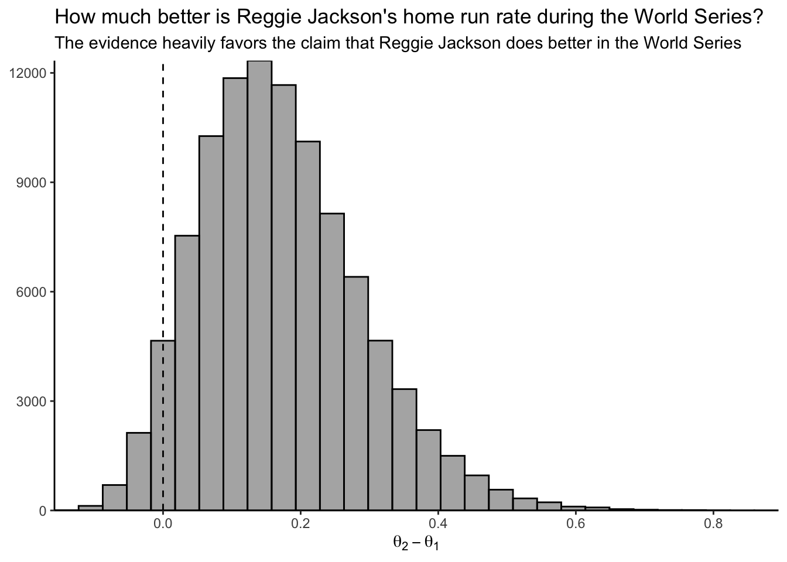
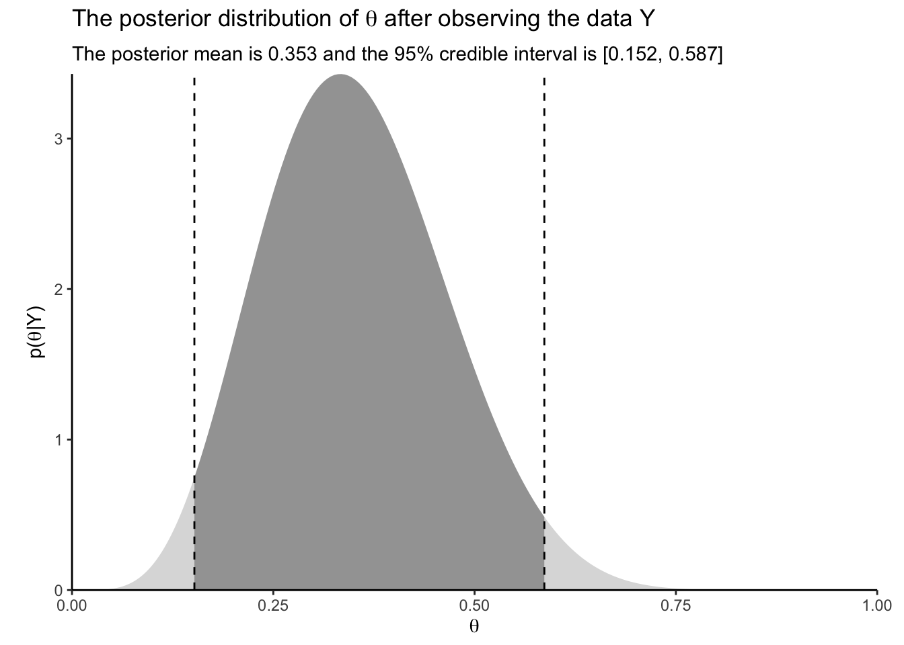

library(tidyr)
library(dplyr, warn.conflicts = FALSE)
library(ggplot2)
library(gt)
library(glue)
theme_set(theme_classic())Chapter 2.4
Exercise 1
Assume \(Y_1, \dots, Y_n \vert \mu \overset{\mathrm{iid}}{\sim}\) where \(\sigma^2\) is fixed and the unknown mean \(\mu\) has prior \(\mu\sim\mathrm{Normal}(0, \sigma^2/m)\)
- Give a 95% posterior interval for \(\mu\)
Solution: From chapter 2.1.3 and derivations in Appendix 3 of the book, we immediately write our posterior as
\[ \begin{aligned} \mu\vert \mathbf Y &\sim \mathrm{N}(w \bar Y + (1 - w)\mu_0, \frac{\sigma^2}{n + m}) \\ &= \mathrm{N}(w \bar Y, \frac{\sigma^2}{n + m}), \quad \mu_0 = 0, \end{aligned} \]
where \(w = n/(n+m) \in [0, 1]\). A 95% posterior interval for \(\mu\) is any interval, \((l, u)\) such that
\[ P(l < \mu < u) = 0.95 \]
Let \(z_\alpha\) denote the number such that if \(Z \sim \mathrm{N}(0, 1)\), then
\[ P(Z < z_\alpha) = \alpha. \]
We can use R to find the values of \(z_{0.025}\) and \(z_{0.975}\)
```{r}
qnorm(0.025)
qnorm(0.975)
```[1] -1.959964
[1] 1.959964Since \(\mu\) is normally distributed with mean \(w\hat Y\) and variance \(\sigma^2/(n+m)\), we know that
\[ \frac{\mu - w\hat Y}{\sigma/\sqrt{n+m}} \sim \mathrm{N}(0, 1) \] We can thus deduce our interval by writing
\[ \begin{aligned} &P(-1.96 < \frac{\mu - w\hat Y}{\sigma/\sqrt{n+m}} < 1.96) = 0.95 \\ \rightarrow\quad &P(-1.96\frac{\sigma}{\sqrt{n+m}} < \mu - w\hat Y < 1.96\frac{\sigma}{\sqrt{n+m}}) = 0.95 \\ \rightarrow\quad &P(w\hat Y -1.96\frac{\sigma}{\sqrt{n+m}} < \mu < w\hat Y + 1.96\frac{\sigma}{\sqrt{n+m}}) = 0.95. \end{aligned} \]
This gives us the 95% posterior interval
\[ (w\hat Y -1.96\frac{\sigma}{\sqrt{n+m}}, w\hat Y + 1.96\frac{\sigma}{\sqrt{n+m}}). \]
- Select a value of \(m\) and argue that for this choice your 95% posterior credible interval has frequentist coverage 0.95 (that is, if you draw many samples of size \(n\) and compute the 95% interval following the formula in a. for each sample, in the long run 95% of the intervals will contain the true value of \(\mu\)).
Solution: If we let \(m\rightarrow 0\), our prior variance increases to \(\infty\) and the posterior mean becomes the sample mean, with 95% posterior credibility interval
\[ (\hat Y -1.96\frac{\sigma}{\sqrt{n}}, \hat Y + 1.96\frac{\sigma}{\sqrt{n}}). \]
Since we assume a normal distribution, and the variance \(\sigma^2\) is constant and assumed known, then the above interval is exactly the same as the confidence interval for \(\mu\). Thus, according to our chosen model and using the frequentist way of thinking, the true value of mu will fall inside an interval computed according to this formula in 95% of trials (in the long run) in a repeated sampling setup.
Exercise 2
The Major League Baseball player Reggie Jackson is known as “Mr October” for his outstanding performances in the World Series (which takes place in October). Over his long career he played in 2820 regular-season games and hit 563 home runs in these games (a player can hit 0, 1, 2, … home runs in a game). He also played in 27 world series games and hit 10 home runs in these games.
Assuming uninformative conjugate priors, summarize the posterior distribution of his home-run rate in the regular season and World Series. Is there sufficient evidence to claim that he performs better in the World Series?
Solution: We are dealing with numbers of events over fixed periods of time, so the Poisson-gamma model is the logical choice.
Our Poisson likelihood with rate \(\lambda\) over a period of time \(T\) is
\[ f(Y\vert \lambda) = \frac{(T\lambda)^Y}{Y!} \exp(-T\lambda), \]
and our Gamma prior is
\[ \pi(\lambda \vert a, b) = \frac{b^a}{\Gamma(a)}\lambda^{a-1}\exp\left(-\lambda b\right). \]
Chapter 2.1.2 in the book tells us that our posterior will take the form of a Gamma(A, B) distribution where \(A = Y + a\) and \(B = T + b\). We want to use a non-informative prior, so we choose \(a=0.01\) and \(b=0.01\).
T1 <- 2820
Y1 <- 563
T2 <- 27
Y2 <- 10
a <- 0.01
b <- 0.01
A1 <- Y1 + a
B1 <- T1 + b
A2 <- Y2 + a
B2 <- T2 + bThe means for the two posterior distributions are
results <- tibble(
Type = c("Regular-season", "World series"),
A = c(A1, A2),
B = c(B1, B2),
Mean = A / B,
Lower = qgamma(0.025, shape = A, rate = B),
Upper = qgamma(0.975, shape = A, rate = B)
)
# Table
results |>
gt() |>
tab_spanner(columns = c(Lower, Upper), label = "95% Posterior Interval")| Type | A | B | Mean | 95% Posterior Interval | |
|---|---|---|---|---|---|
| Lower | Upper | ||||
| Regular-season | 563.01 | 2820.01 | 0.1996482 | 0.1834953 | 0.2164728 |
| World series | 10.01 | 27.01 | 0.3706035 | 0.1777961 | 0.6330224 |
We could also sample from the two distributions and use those samples to summarize the difference between the two distributions
X1 <- rgamma(n = 1e5, shape = A1, rate = B1)
X2 <- rgamma(n = 1e5, shape = A2, rate = B2)
p_greater <- mean(X2 > X1)
tibble(
Regular = X1,
Worldseries = X2,
Difference = X2 - X1
) |>
ggplot(aes(x = Difference)) +
geom_histogram(
alpha = 0.5,
color = "black"
) +
geom_vline(
xintercept = 0,
lty = 2
) +
coord_cartesian(expand = FALSE) +
labs(
x = expression(theta[2]-theta[1]),
y = NULL,
title = "How much better is Reggie Jackson's home run rate during the World Series?",
subtitle = "The evidence heavily favors the claim that Reggie Jackson does better in the World Series"
)
Finally, we calculate the probability that Reggie Jackson’s performance is better in the World Series than in the regular season (assuming our chosen model and priors).
mean(X2 > X1)[1] 0.95189Exercise 4
Assume that \(Y\vert\theta \sim \mathrm{NegBinomial}(\theta, m)\) and \(\theta\sim\mathrm{Beta}(a, b)\).
- Derive the posterior of \(\theta\)
Solution: Our Negative Binomial likelihood can be written
\[ \begin{aligned} f(Y\vert m, \theta) &= \binom{Y+m-1}{Y}\theta^m(1-\theta)^Y \\ &\propto \theta^m(1-\theta)^Y. \end{aligned} \]
The beta prior is written
\[ \begin{aligned} \pi(\theta \vert a, b) \propto \theta^{a-1}(1-\theta)^{b-1}. \end{aligned} \]
We see that when we multiply these two together, our posterior will become
\[ \begin{aligned} p(\theta \vert Y) &\propto f(Y\vert\theta)\pi(\theta) \\ &\propto \theta^m(1-\theta)^Y \cdot \theta^{a-1}(1 - \theta)^{b-1} \\ &= \theta^{m + a - 1}(1 - \theta)^{Y + b - 1}, \end{aligned} \]
which is the kernel of a Beta(m + a, Y + b) distribution.
- Plot the posterior of \(\theta\) and give its 95% credible interval assuming \(m = 5\), \(Y = 10\), and \(a=b=1\).
Solution:
Code
m <- 5
Y <- 10
a <- 1
b <- 1
A <- m + a
B <- Y + b
lower <- qbeta(0.025, shape1 = A, shape2 = B)
upper <- qbeta(0.975, shape1 = A, shape2 = B)
ggplot() +
stat_function(
geom = "area",
fun = dbeta,
args = list(shape1 = A, shape2 = B),
alpha = 0.5,
xlim = c(lower, upper)
) +
stat_function(
geom = "area",
fun = dbeta,
args = list(shape1 = A, shape2 = B),
alpha = 0.2,
xlim = c(0, lower)
) +
stat_function(
geom = "area",
fun = dbeta,
args = list(shape1 = A, shape2 = B),
alpha = 0.2,
xlim = c(upper, 1)
) +
geom_vline(
xintercept = lower,
lty = 2
) +
geom_vline(
xintercept = upper,
lty = 2
) +
coord_cartesian(expand = FALSE) +
labs(
x = expression(theta),
y = expression(paste(p, "(", theta, "|", Y, ")")),
title = expression(paste("The posterior distribution of ", theta, " after observing the data Y")),
subtitle = glue("The posterior mean is {round(A/(A+B), 3)} and the 95% credible interval is [{round(lower, 3)}, {round(upper, 3)}]")
) +
theme(
plot.margin = margin(t = 5, r = 15, b = 5, l = 15)
)
Exercise 5
Over the past 50 years California has experienced an average of \(\lambda_0=75\) large wildfires per year. For the next 10 years you will record the number of large fires in California and then fit a Poisson/gamma model to these data. Let the rate of large fires in this future period, \(\lambda\), have prior \(\lambda\sim\mathrm{Gamma}(a,b)\). Select \(a\) and \(b\) so that the prior is uninformative with prior variance around 100 and gives prior probability approximately \(\mathrm{Prob}(\lambda > \lambda_0) = 0.5\) so that the prior places equal probability on both hypotheses in the test for a change in the rate.
Solution:
The variance of the Gamma(a, b) distribution is \(a/b^2\). To find the correct values for \(a\) and \(b\) we can create a sequence of values with variance 100 and find which pair is closes to giving us \(P(\lambda > \lambda_0) = 0.5\).
We first use the equation for the variance to find how \(a\) and \(b\) must relate to each other.
\[ \begin{aligned} \frac{a}{b^2} &= 100 \\ \rightarrow \quad a &= 100b^2 \\ \rightarrow \quad b &= \sqrt{a}/10. \end{aligned} \]
We then find a pair that satisfies the second condition by performing the following:
- Create a grid of values for \(a\)
- Use the fact that \(b = \sqrt a/10\) to calculate the corresponding values for \(b\)
- Use the
Rfunctionpgammato calculate \(P(\lambda > \lambda_0)\) - Find the pair of values for which this probability is closest to 0.5
my_variance <- 100
tibble(
a = seq(0, 100, length.out = 1e4),
b = sqrt(a) / 10
) |>
mutate(
# Calculate the probability
prob_greater = pgamma(75, shape = a, rate = b),
# Calculate how close probability is to 0.5
prob_diff = abs(prob_greater - 0.5)
) |>
arrange(prob_diff) |>
slice(1)# A tibble: 1 × 4
a b prob_greater prob_diff
<dbl> <dbl> <dbl> <dbl>
1 56.9 0.754 0.500 0.0000446We see that if we choose \(a = 57\) and \(b = 0.75\) we get an approximate prior variance of 100 and \(P(\lambda > \lambda_0) \approx 0.5\).